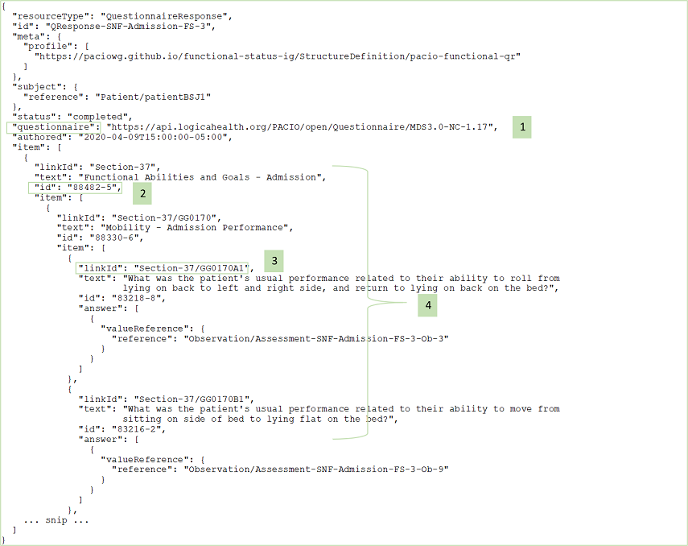
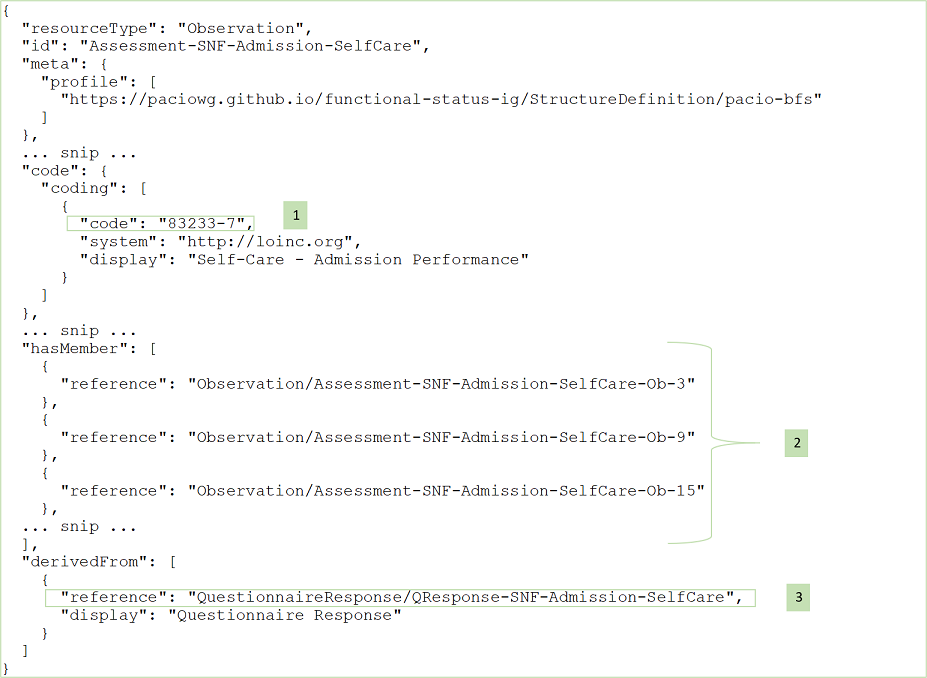

PACIO Functional Status Implementation Guide
0.1.0 - CI Build
PACIO Functional Status Implementation Guide
0.1.0 - CI Build
PACIO Functional Status Implementation Guide - Local Development build (v0.1.0). See the Directory of published versions
This implementation guide provides a set of resource profiles to define how information should be packaged and retrieved in the exchange of post-acute care (PAC) assessment data. In the following sections the highlights of the key fields of each profile are presented and guidance for building profile instances is provided.
A note on the use of “Must Support” in the Implementation Guide: For profiles defined in other IGs, the meaning of “Must Support” is established in the defining IG. For profiles defined in this IG, Must Support will conform with US Core definition.
This resource profile is intended to be used for the data exchange of a point in time set of observation data collected through the use of a structured resource (e.g. assessment tool, instrument, or screen). It is derived from the FHIR Observation resource.
This resource profile is intended to be used for the data exchange of a single observation data generally included in a set of observation data collected through the use of a structured resource (e.g. assessment tool, instrument, or screen). It is derived from the FHIR Observation resource.
This resource profile is intended to be used for the data exchange of a summary observation regarding the most recent prior level of function immediately preceding the current admission, illness, or exacerbation for a patient. The use of this profile is encouraged in the absence of formal prior level of function assessments. For formal assessments conducted with for example, an assessment instrument, use the Functional Status Collection and Functional Status profiles to capture assessment data. It is derived from the FHIR Observation resource.
This resource profile is intended to be used for specifying a record of an assistive device–e.g. walker or wheelchair, being used by a patient during a functional status assessment. This profile based on the DeviceUseStatement resource provides a way to include information about device usage during an assessment.
The PACIO data model as expressed in the resource profiles is designed to be flexible so as to facilitate the exchange of a variety of types of PAC assessment data. The key to effective data exchange and searching of assessment data is the use of content standards. Therefore, it is paramount that nationally accepted, standardized coding systems such as LOINC and SNOMED are used in specifying assessment data elements.
In the following set of examples, we provide guidance for using specific codes and conventions for constructing profile instances for data exchange. Although we reference a number of particular PAC patient/resident assessment instruments and provide examples to show how those particular types of assessment data can be exchanged, we do not endorse any of those assessment instruments over other assessment instruments that we have not mentioned. Our intention is to demonstrate the flexibility and adequacy of the PACIO data model, rather than to suggest the best types of functional assessment data for clinicians to use.

Guidance and Notes:

Guidance and Notes:

Guidance and Notes:

Guidance and Notes:

Guidance and Notes:
IG © 2020+ . Package hl7.fhir.us.pacio-fs#0.1.0 based on FHIR 4.0.1. Generated 2021-09-15
Links: Table of Contents |
QA Report
| Version History |
Search |
 |
Propose a change
|
Propose a change